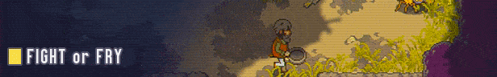
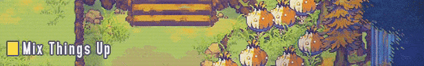
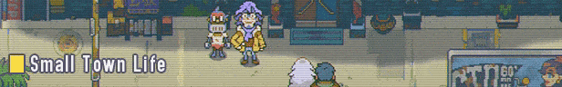
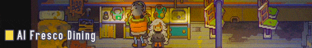
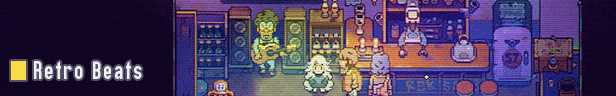

Eastward is a beautifully detailed and charming adventure game, from Shanghai-based indie developers, Pixpil.
In the near-future, society is starting to collapse, and the human population is at an all-time low. A deadly toxic presence has spread across the land, destroying and devouring everything in its path.
Those who could escape the miasma flocked to underground villages to start a new life. But for a hardworking miner and a mysterious young girl, the hope of a thriving outside world beckons…
Escape the tyrannical clutches of Sandfill’s subterranean society and join Eastward’s unlikely duo on an exciting adventure to the land above! Discover beautiful yet bizarre settlements and make new friends as you travel across the world by rail.
Contains adult humour and some mature themes.
Discover the wonderfully weird world of Eastward. Climb aboard the cross-country railway which spans this decaying continent, stopping off to explore its bustling towns, curious campsites and shady forests.

Fend off peculiar monsters and ferocious bosses with John’s weapon of choice - be it a flamethrower, cog-shooter or your trusty ol’ frying pan. Feeling merciful? Try temporarily stunning them with Sam’s kinetic blast.

Switch between John and Sam to solve environmental puzzles and fight your way through formidable dungeons. Separate the duo to unlock hidden paths or stick together as you traverse a perilous landscape.

Get to know a quirky cast of characters with oodles of personality! Immerse yourself in a heartwarming story-driven adventure, packed with fun and wacky humour.

Create deliciously authentic Eastwardian cuisine using (mostly) fresh, organic ingredients from toxic forests, potcrab farms and abandoned malls. These delicacies will grant health bonuses, power boosts and secret boons.

Bop along to a wonderfully upbeat soundtrack composed by Joel Corelitz (Death Stranding, Hohokum, The Unfinished Swan), with sound design from Irish studio, Hyperduck Soundworks (Dust: An Elysian Tail, Kingdom Rush)